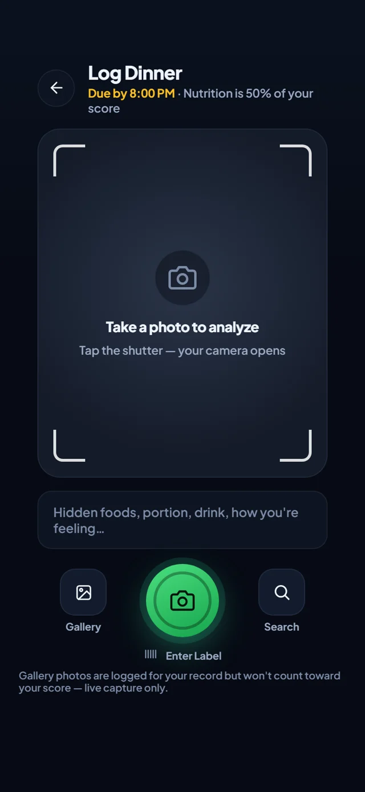
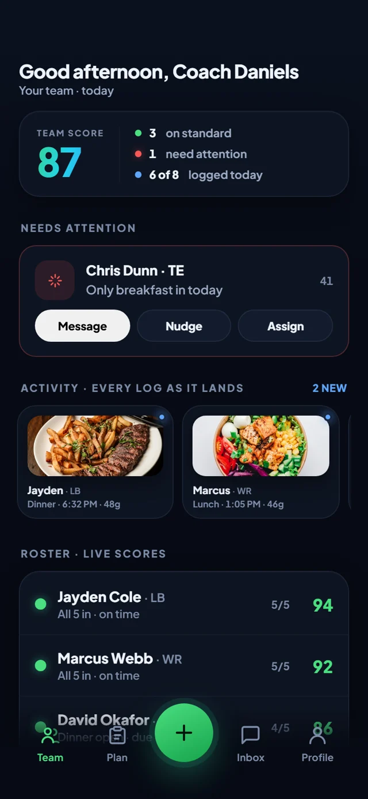

Coaches
See who's executing. Intervene early. Develop better players without chasing anyone.
The standard has changed.
OnStandard turns daily execution into credible proof, visible to the people counting on you. A professional sets the standard. You prove it every day. Everyone invested sees the result.
Athletes & clients are free with a paying professional.
Why the standard has changed
NIL, revenue sharing, and the portal raised the financial stakes of athlete development at every level. The expectations are higher. The margin for error is smaller. The need for proof has never been greater.
Schools, programs, and families now commit serious money, time, and resources. Execution determines who gets trusted with the opportunity.
At every level, talent is common. Consistency, discipline, and availability separate good players from the ones who get paid.
Large rosters. Multiple staff. Dozens of daily habits per athlete. Critical information gets missed without a better system.
Championships are built on daily standards. OnStandard makes execution visible so everyone can act faster.
The system
From meals to recovery to check‑ins, OnStandard captures the daily actions that drive results. AI reads, verifies, and surfaces what matters, and the score moves the moment the work lands.
Point the camera at the plate. Meals, recovery, and check‑ins land in seconds. Live capture only: gallery photos never score.
Foods, portions, and macros with a confidence level on every detection. When it isn't sure, it shows a "?", never a guess.
The day lands against your standard and the score reflects what you actually did. On time counts full. Late counts half. Skipped reads as skipped.
Coaches and trainers get the whole roster in three seconds: who's on standard, who's slipping, every log as it lands.


Built for every standard
See who's executing. Intervene early. Develop better players without chasing anyone.

See adherence between sessions. Keep the clients you'd otherwise lose. Scale your coaching.

Align your staff. Protect your investment. Raise the standard across every roster.

Own your process. Build the habits. Walk into every room with receipts.

Know the work is getting done. Support with confidence, not surveillance.
One number, protected
Every user is scored on the same published categories and weights, so a 94 means the same thing on every roster in the country. What's individualized is the standard underneath: your professional sets the targets, windows, and requirements around your goal, within evidence‑based rails the platform enforces. No coach can invent an easy formula. No athlete can sweet‑talk the math.
Built from inside the standard
OnStandard was built by a former Division I athlete and college football coach who saw both sides of the same gap: coaches plan brilliantly, athletes promise sincerely, and nobody can prove what actually happened between sessions. Every rule in this product, the fixed formula, the photo proof, the honest late credit, comes from rooms where the standard was real and the receipts weren't.
Founding 50: the first 50 coaches and facilities lock 50% off for 12 months, grandfathered so a later price rise never touches them. You're not buying software early; you're setting the standard with us.
Pricing
Brought on by a coach, trainer, or program. Full app, full AI, full history. Your record stays yours forever, even after you leave.
For trainers, RDs & private coaches
Your whole book on one live roster, up to 50 clients included. See compliance between sessions; keep the clients you'd otherwise lose.
Teams, schools, and performance gyms, from 30 to 150+ active athletes. You pay only for athletes who actually use it; idle seats free up automatically.
Opening pricing. Founding partners: the first 50 coaches and facilities lock 50% off for 12 months, grandfathered so a later price rise never touches them.
Straight answers
Everything a coach, athlete, or parent asks before they trust the number. No hedging.
Yes. You never pay while you're attached to a coach, trainer, or program; they carry the cost because they get the value. If you leave, your record doesn't vanish; it's yours.
The framework is universal: the same categories and weights for every user, published right on this page. The requirements inside it are individualized: your professional sets targets, meal windows, and check‑ins around your goal. So two athletes can have different standards, but their 84s are computed identically, and that's what makes the number comparable.
The rails. Weights are fixed platform‑wide and targets must sit inside evidence‑based ranges the platform enforces; a coach can tune the standard to the athlete, but can't hollow it out. And because photo proof and timing rules are universal, an easy plan still can't fake done work.
No, and it will never claim to. It can flag possible allergens based on the foods it detects and the restrictions you've declared, which is useful as a heads‑up. But a photo can't reveal sauces, oils, cross‑contact, or hidden ingredients, so never rely on it to confirm a plate is safe. People with serious allergies should treat it as one more set of eyes, not a guarantee.
Your history stays yours, free, and readable: every logged day, score, and thread. Your seat on that roster closes, so live scoring pauses until you connect with your next coach, trainer, or program, and the moment you do, they see your history from day one. A solo plan for keeping your score live between professionals is on the roadmap, and record access will never be held hostage to it.
Only the people the athlete (or their family) connects: a coach or trainer sees the day's execution; parents get a scoped view of the score and trends, never private threads. For minors, access requires verified guardian consent and is denied by default until it exists. Data is never sold.
No. We don't broker deals, value athletes, or take a cut of anything. We build the thing every serious opportunity quietly depends on: proof that the work gets done, day after day, in a record that belongs to the athlete. Who you show it to is up to you.
All of them, and everyday clients too. Nutrition, recovery, and commitment are universal; the standard adapts to the season and the training schedule. If someone you trust sets a bar, OnStandard can hold it.
The people who profit pay. The people who sweat don't.